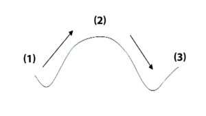

Part 1
READING PASSAGE 2
You should spend about 20 minutes on Questions 14-26, which are based on Reading Passage 2 below.

Natural pesticide in India
A
A dramatic story about cotton farmers in India shows how destructive pesticides can be for people and the environment; and why today’s agriculture is so dependent on pesticides. This story also shows that it’s possible to stop using chemical pesticides without losing a crop to ravaging insects, and it explains how to do it.
B
The story began about 30 years ago, a handful of families migrated from the Guntur district of Andhra Pradesh, southeast India, into Punukula, a community of around 900 people farming plots of between two and 10 acres. The outsiders from Guntur brought cotton-culture with them. Cotton wooed farmers by promising to bring in more hard cash than the mixed crops they were already growing to eat and sell: millet, sorghum, groundnuts, pigeon peas, mung beans, chili and rice. But raising cotton meant using pesticides and fertilizers – until then a mystery to the mostly illiterate farmers of the community. When cotton production started spreading through Andhra Pradesh state. The high value of cotton made it an exceptionally attractive crop, but growing cotton required chemical fertilizers and pesticides. As most of the farmers were poor, illiterate, and without previous experience using agricultural chemicals, they were forced to rely on local, small-scale agricultural dealers for advice. The dealers sold them seeds, fertilizers, and pesticides on credit and also guaranteed the purchase of their crop. The dealers themselves had little technical knowledge about pesticides. They merely passed on promotional information from multinational chemical companies that supplied their products.
C
At first, cotton yields were high, and expenses for pesticides were low because cotton pests had not yet moved in. The farmers had never earned so much! But within a few years, cotton pests like bollworms and aphids plagued the fields, and the farmers saw how rapid insect evolution can be. Repeated spraying killed off the weaker pests, but left the ones most resistant to pesticides to multiply. As pesticide resistance mounted, the farmers had to apply more and more of the pesticides to get the same results. At the same time, the pesticides killed off birds, wasps, beetles, spiders, and other predators that had once provided natural control of pest insects. Without these predators, the pests could destroy the entire crop if pesticides were not used. Eventually, farmers were mixing sometimes having to spray their cotton as frequently as two times a week. They were really hooked!
D
The villagers were hesitant, but one of Punukula’s village elders decided to risk trying the natural methods instead of pesticides. His son had collapsed with acute pesticide poisoning and survived but the hospital bill was staggering. SECURE’s staff coached this villager on how to protect his cotton crop by using a toolkit of natural methods chat India’s Center for Sustainable Agriculture put together in collaboration with scientists at Andhra Pradesh’s state university. They called the toolkit “Non-Pesticide Management” – or “NPM.”
E
The most important resource in the NPM toolkit was the neem tree (Azadirachta indica) which is common throughout much of India. Neem tree is a broad-leaved evergreen tree related to mahogany. It protects itself against insects by producing a multitude of natural pesticides that work in a variety of ways: with an arsenal of chemical defenses that repel egg-laying, interfere with insect growth, and most important, disrupt the ability of crop-eating insects to sense their food.
F
In fact, neem has been used traditionally in India to protect stored grains from insects and to produce soaps, skin lotions, and other health products. To protect crops from insects, neem seeds are simply ground into a powder that is soaked overnight in water. The solution is then sprayed onto the crop. Another preparation, neem cake, can be mixed into the soil to kill pests and diseases in the soil, and it doubles as an organic fertilizer high in nitrogen. Neem trees grow locally, so the only “cost” is the labor to prepare neem for application to fields.
G
The first farmer’s trial with NPM was a complete success! His harvest was as good as the harvests of farmers that were using pesticides, and he earned much more because he did not spend a single rupee on pesticides. Inspired by this success, 20 farmers tried NPM the next year. SECURE posted two well-trained staff in Punukula to teach and help everyone in the village, and the village women put pressure on their husbands to stop using toxic chemicals. Families that were no longer exposing themselves to pesticides began to feel much better, and the rapid improvement in income, health, and general wellbeing quickly sold everyone on the value of NPM. By 2000, all the farmers in Punukula were using NPM, not only for cotton but for their other crops as well.
H
The suicide epidemic came to an end. And with the cash, health, and energy that returned when they stopped poisoning themselves with pesticides, the villagers were inspired to start more community and business projects. The women of Punukula created a new source of income by collecting, grinding, and selling neem seeds for NPM in other villages. The villagers rescued their indentured children and gave them special six-month “catch-up,” courses to return to school.
I
Fighting against pesticides, and winning, increased village solidarity, self-confidence, and optimism about the future. When dealers tried to punish NPM users by paying less for NPM cotton, the farmers united to form a marketing cooperative that found fairer prices elsewhere. The leadership and collaboration skills that the citizens of Punukula developed in the NPM struggle have helped them to take on other challenges, like water purification, building a cotton gin to add value to the cotton before they sell it, and convincing the state government to support NPM over the objection of multi-national pesticide corporations.
Part 2
READING PASSAGE 3
You should spend about 20 minutes on Questions 27 - 40, which are based on Reading Passage 3 below.

Sunset for the Oil Business
The world is about to run out of oil. Or perhaps not. It depends whom you believe…
A
Members of the Department Analysis Centre (ODAC) recently met in London and presented technical data that support their grim forecast that the world is perilously close to running out of oil. Leading lights of this moment, including the geologists Colin Campbell, rejected rival views presented by American geological survey and the international energy agency that contradicted their findings. Dr Campbell even decried the amazing display of ignorance, denial and obfuscation by government, industry and academics on this topic.
B
So is the oil really running out? The answer is easy: Yes. Nobody seriously disputes the notion that oil is, for all practical purposes, a non-renewable resource that will run out someday, be that years or decades away. The harder question is determining when precisely oil will begin to get scarce. And answering that question involves scaling Hubbert’s peak.
C
M. King Hubbert, a Shell geologist of legendary status among depletion experts, forecast in 1956 that oil production in the United States would peak in the early 1970s and then slowly decline, in something resembling a bell-shaped curve. At the time, his forecast was controversial, and many rubbished it. After 1970, however, empirical evidence proved him correct: oil production in America did indeed peak and has been in decline ever since.
D
Dr Hubbert’s analysis drew on the observation that oil production in a new area typically rises quickly at first, as the easiest and cheapest reserves are tapped. Over time, reservoirs age and go into decline, and so lifting oil becomes more expensive. Oil from that area then becomes less competitive in relation to other fuels, or to oil from other areas. As a result, production slows down and usually tapers off and declines. That, he argued, made for a bell-shaped curve.
E
His successful prediction has emboldened a new generation of geologists to apply his methodology on a global scale. Chief among them are the experts at ODAC, who worry that the global peak in production will come in the next decade. Dr Campbell used to argue that the peak should have come already; he now thinks it is just around the corner. A heavyweight has now joined this gloomy chorus. Kenneth Deffeyes of Princeton University argues in a lively new book (“The View from Hubbert’s Peak”) that global oil production could peak as soon as 2004.
F
That sharply contradicts mainstream thinking. America’s Geological Survey prepared an exhaustive study of oil depletion last year (in part to rebut Dr Campbell’s arguments) that put the peak of production some decades off. The IEA has just weighed in with its new “World Energy Outlook”, which foresees enough oil to comfortably meet the demand to 2020 from remaining reserves. René Dahan, one of ExxonMobil’s top managers, goes further: with an assurance characteristic of the world’s largest energy company, he insists that the world will be awash in oil for another 70 years.
G
Who is right? In making sense of these wildly opposing views, it is useful to look back at the pitiful history of oil forecasting. Doomsters have been predicting dry wells since the 1970s, but so far the oil is still gushing. Nearly all the predictions for 2000 made after the 1970s oil shocks were far too pessimistic. America’s Department of Energy thought that oil would reach $150 a barrel (at 2000 prices); even Exxon predicted a price of $100.
H
Michael Lynch of DRI-WEFA, an economic consultancy, is one of the few oil forecasters who has got things generally right. In a new paper, Dr Lynch analyses those historical forecasts. He finds evidence of both bias and recurring errors, which suggests that methodological mistakes (rather than just poor data) were the problem. In particular, he faults forecasters who used Hubbert-style analysis for relying on fixed estimates of how much “ultimately recoverable” oil there really is below ground, in the industry’s jargon: that figure, he insists, is actually a dynamic one, as improvements in infrastructure, knowledge and technology raise the amount of oil which is recoverable.
I
That points to what will probably determine whether the pessimists or the optimists are right: technological innovation. The first camp tends to be dismissive of claims of forthcoming technological revolutions in such areas as deep-water drilling and enhanced recovery. Dr Deffeyes captures this end-of-technology mindset well. He argues that because the industry has already spent billions on technology development, it makes it difficult to ask today for new technology, as most of the wheels have already been invented.
J
Yet techno-optimists argue that the technological revolution in oil has only just begun. Average recovery rates (how much of the known oil in a reservoir can actually be brought to the surface) are still only around 30-35%. Industry optimists believe that new techniques on the drawing board today could lift that figure to 50-60% within a decade.
K
Given the industry’s astonishing track record of innovation, it may be foolish to bet against it. That is the result of adversity: the nationalisations of the 1970s forced Big Oil to develop reserves in expensive, inaccessible places such as the North Sea and Alaska, undermining Dr Hubbert’s assumption that cheap reserves are developed first. The resulting upstream investments have driven down the cost of finding and developing wells over the last two decades from over $20 a barrel to around $6 a barrel. The cost of producing oil has fallen by half, to under $4 a barrel.
L
Such miracles will not come cheap, however, since much of the world’s oil is now produced in ageing fields that are rapidly declining. The IEA concludes that global oil production need not peak in the next two decades if the necessary investments are made. So how much is necessary? If oil companies are to replace the output lost at those ageing fields and meet the world’s ever-rising demand for oil, the agency reckons they must invest $1 trillion in non-OPEC countries over the next decade alone. That’s quite a figure.
Part 1
Questions 14-17
Do the following statements agree with the information given in Reading Passage 1?
In boxes 14-15 on your answer sheet, write
| TRUE. | if the statement agrees with the information | |
| FALSE. | if the statement contradicts the information | |
| NOT GIVEN. | If there is no information on this |
14. Cotton in Andhra Pradesh state could really bring more income to the local farmers than traditional farming.
15. The majority of farmers had used agricultural pesticides before 30 years ago.
16. The yield of cotton is relatively lower than that of other agricultural crops.
17. The farmers didn’t realize the spread of the pests was so fast.
Questions 18-24
Complete the summary below
Choose NO MORE THAN TWO WORDS from the passage for each answer
Write your answers in boxes 18-24 on your answer sheet.
The Making of pesticide protecting crops against insects
The broad-leaved neem tree was chosen. It is a fast-growing and 18 tree and produces an amount of 19 for itself that can be effective like insects repellent. Firstly, neem seeds need to be crushed into 20 form, which is left behind 21 in water. Then we need to spray the solution onto the crop. A special 22 is used when mixing with soil in order to eliminate bugs and bacteria, and its effect 23 when it adds the level of 24 1 in this organic fertilizer meanwhile.
Questions 25-26
Answer the questions below
Choose NO MORE THAN TWO WORDS AND/OR A NUMBER from the passage for each answer.
Write your answers in boxes 25-26 on your answer sheet.
In which year did all the farmers use NPM for their crops in Punukala?
25
What gave the women of Punukula a business opportunity to NPMs?
26
Part 2
Questions 27-31
Do the following statements agree with the claims of the writer in Reading Passage ?
In boxes 27-31 on your answer sheet, write
| YES. | if the statement agrees with the views of the writer | |
| NO. | if the statement contradicts the views of the writer | |
| NOT GIVEN. | if it is impossible to say what the writer thinks about this |
27. Hubbert has a high-profile reputation amongst ODAC members.
28. Oil is likely to last longer than some other energy sources.
29. The majority of geologists believe that oil with start to run out sometime this decade.
30. Over 50 percent of the oil we know about is currently being recovered.
31. History has shown that some of Hubbert’s principles were mistaken.
Questions 32-35
Complete the notes below
Choose ONE WORD ONLY from the passage for each answer.
Write your answers in boxes 32-35 on your answer sheet.
Many people believed Hubbert’s theory was 32 when it was originally presented.

(1) When an oilfield is 33 , it is easy to…
(2) The recovery of the oil gets more 34 as the reservoir gets older
(3) The oilfield can’t be as 35 as other areas.
Questions 36-40
Look at the following statements (questions 36-40) and the list of people below.
Match each statement with the correct person, A-E.
Write the correct letter, A-E in boxes 36-40 on your answer sheet.
NB You may use any letter more than once.
36. has found fault in the geological research procedure
37. has provided the longest-range forecast regarding oil supply
38. has convinced others that oil production will follow a particular model
39. has accused fellow scientists of refusing to see the truth
40. has expressed doubt over whether improved methods of extracting oil are possible.
| List of People | ||
| A. | Colin Campell | |
| B. | M. King Hubbert | |
| C. | Kenneth Deffeyes | |
| D. | Rene Dahan | |
| E. | Michael Lynch | |